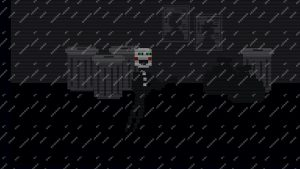
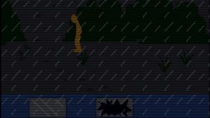
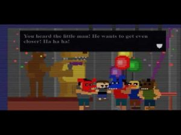
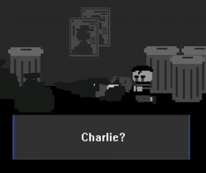
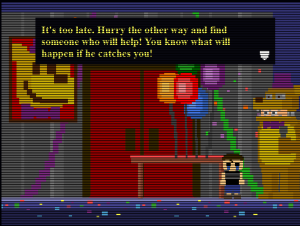
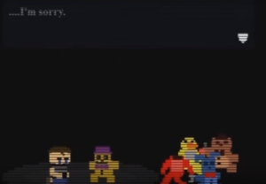
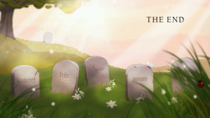
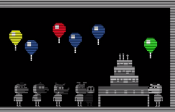

If you see any issues, please do make us aware via our Contact Form.
Thank you for browsing FNaFLore.com, we hope you enjoy the improvements that are coming to the site!

The lore of the Lorekeeper Ending
Author Links
FFPS was stuffed with lore from the epic finale to purchasable items. There were also several endings and one particular ending had the juiciest clues littered throughout it, the Lorekeeper Ending. I will pick through all the aspects and give a conclusion to the Gravestone Ending and how the clues all come together. I will start with the easiest of all;
SECURITY PUPPET MINIGAME
Most of the lore in this minigame was revealed in the climatic finale. Henry’s daughter (presumably Charlie) was locked out of one of the first restaurants and William Afton saw an opportunity to kill her. The Security Puppet, being programmed to protect her, then merges with her and she possesses the Puppet. However, this initially striked me as odd. There has got to be more lore in this minigame as why would Scott include the full minigame in the ending? It would make Security Puppet a waste of Faz-Coins.
After rewatching and analyzing the minigame, I and others have noticed that the weather in this minigame

and in Midnight Motorist are the same, suggesting the two events happened on the same night.

Midnight Motorist is also called “later that night” (but more on that later).
I also noticed that the outside area in the minigame is the same place that we pick up the salvageable animatronics.
I believe I can accurately find exactly where Charlie was murdered.
Henry said “This place will not be remembered, and the memory of everything that started this can finally begin to fade away, as the agony of every tragedy should.” The first location was Fredbears so it would make sense that if Henry did want to end it all where it started, he would choose the first location. Also, another thing that proves Charlie died outside of Fredbears is the number of screens. In the Security Puppet minigame, the location that Charlie dies at is three screens long. In FNaF 4, Fredbears is three screens long in the minigames. So I am fairly confident Charlie died outside of Fredbears. Now, about “later that night”.
MIDNIGHT MOTORIST
So later that night, William Afton sped away from the crime. As many have pointed out, Orange Guy’s car is the car associated with Purple Guy in the “GIVE CAKE” minigame, which leads us to the conclusion that Orange Guy is William Afton. The house in Midnight Motorist is also the house from the FNaF 4 menu and The Silver Eyes book cover, which reaffirms this is William Afton and his house. Along the way, there is a secret dirt pile hidden by trees. I believe this is Elizabeth’s grave and her death spiraled William into murderous madness. There is also a location called Jr’s which I think is the Unwithered location and the Green Guy is Henry. In Security Puppet, Charlie had a green wristband on while in the novels, Henry was known for having a green flannel shirt. The reason that Henry tells William to leave is because maybe after Elizabeth’s death, they had a falling out and Henry did not want William taking care of kids when he couldn’t take care of his own.
I think Jr’s is the Unwithered location because in the “Fredbear and Friends” TV Show, the original gang was shown to be with Fredbear and SpringBonnie. And the reason it is called “Jr’s” is because maybe it was advertised that Freddy Fazbear was Fredbear’s son and Bonnie was SpringBonnie’s son to make things more welcoming and expand on the franchise. But these are all subplots to what is truly happening in Midnight Motorist. William Afton comes home to find that one of his kids has escaped his room to go to “that place again,”. Meanwhile, a person watching TV says to leave him alone tonight, that this person has had a rough day. This person watching TV is Foxy Bro.
This person has the same t-shirt as Foxy Bro and has the same colour of text.


Their text colour is not exactly the same but if you have issues with this, remember the 3 Purple Guy Theory. The sprites are not meant to be perfect.
And the kid that ran away? That is BV.
Now here is where things get interesting.
Firstly, BV escaped by breaking through a window. Normally, this can’t happen as this past version of BV may be a toddler or younger. However, if you have read my latest theory (I will put in it in a link up the top), I theorized that BV was actually a robot which makes more sense then a child younger than 8 years old breaking a window and not suffering any injuries.
Secondly, there is some animatronic footprints that William Afton is unfazed by, as if he put it there. Since William said “He went to that place again,” BV escaping seems to be a regular occurance so William having a security robot or animatronic is plausible. The main question that arises from this is: Who is this animatronic? I think it is Foxy.
Judging by the size and shape of the footprint, all the other animatronics are too ahem fat. Also, Foxy has always been the broken and seemly older animatronic, which would happen if he was left out in the rain every night. This also explains why Foxy Bro, well, wears a Foxy mask! William, being the control freak he is, told Foxy Bro to scare BV using a Foxy mask so that BV would be terrified of the animatronic and not want to go to “that place”. It worked. And Foxy Bro did go a wee bit over the top.

Finally, what place was BV going to? Fredbears. “He’ll be sorry when he gets back”.

I did not create this artwork. Used by permission from the creator, SenshiOfSadness.
Oh boy, was he right!
But remember, that wasn’t the only thing that happened that day.

I can see two things that could have happened. Either BV saw the Puppet and thought he killed Charlie, or William followed him and did something bad to him. Regardless, it paints a picture of what caused the Nightmares and Foxy Bro to scare BV.
William, after his son kept escaping from his room, got fed up. He knew BV would see Charlie’s corpse so decided to encourage BV to be afraid of the animatronics so he could control him. He got his older brother (would had been nice to him up until this stage) to scare his brother using a Foxy Mask so BV would be afraid of all animatronics, not just the Puppet. But of course, William took this one step further and created the Nightmares to haunt BV at night to make him develop a phobia of the animatronics. And Foxy Bro ended it all, with regret in his heart.

CANDY CADET
This is probably the most confusing piece of lore, but I think I may have an answer to what exactly this is about. This is three different ways the MCI affected people.
Now I will tell you a story. A story about a kind man who would visit five orphans and bring them toys and gladness.
The man lived alone, and lived in fear that someone might break into the house of one of the five children, so he adopted all five, and brought them together in one place, in his own home.
He promised them to never leave them, and they promised to always come home, and never stay out too late.
He left one day to buy food, his heart being filled with gladness, but returned to find that the burglar has chosen his home, and killed all five of the children.
The man could only afford one coffin, so he stitched the five bodies together to make one, and buried the child.
That night, there was a knock at the door.
I believe this is about Henry. After Charlie and Elizabeth’s deaths, he felt worried about the safety of the children so he tried to protect them as much as he could. However, the one day he wasn’t looking, William killed them all and ALL FIVE of the deaths were on him.
Now I will tell you a story about a little boy. He had a red snake that he kept in a metal cage, whose hunger could not be satisfied.
One day, the boy found five baby kittens outside his house. He brought them inside and kept them in a shoebox.
He knew that the snake might kill them, but could not bring himself to get rid of the snake. He knew that if he chose one kitten to feed to the snake, it might be satisfied, but he could not choose.
So, he went to bed, leaving the cage open. The snake went to the shoebox, chose a kitten at random, and ate it.
After five nights had gone by, the boy was full of regret, and cut snake open. he pieced the remains together, and put the kitten back into the shoebox.
This is about Michael Afton. He was controlled by his father as evidenced by William telling him to get Baby in Sister Location and the Nightmares terrorizing him during his childhood. That’s why he did nothing about the kittens/children. Then in FFPS, he killed his father, redeeming himself.
Now I will tell you a story about a young woman who was sealed in a small room.
In the room was a furnace, and five keys. She was told that each of the five keys would unlock one of five doors outside her room. Inside each room was a child that she could take with her as she fled the building. But she was only allowed to leave her own room with one key, not all five.
Desperate to find a way to save all five children, the woman melted the five keys together in the furnace to create a single key, hoping it would unlock all five doors.
Of course, it did not work that way. Now her key opened none of the doors. Rather than leaving her room with a key to one life, she had taken with her a key to five deaths.
This story is about Charlie. She had the power to save someone but because of her good nature, she chose to save all five which made all never be able to move on, with her not able to move on as well.
As a side note, 5 becoming 1 is a concept in The Fourth Closet and the animatronic that is the five classics into one is shown in UCN.
If you have not guessed by now, I am going from easiest from hardest to solve. I said Candy Cadet is the hardest but where is Fruity Maze? Well, Fruity Maze is not the hardest, if you have read The Fourth Closet.
Fruity Maze
In Fruity Maze, it’s a simple fruit game that turns into a dark, bloody minigame with Springtrap poking his head out like a cartoon rabbit. Then William after seemly murdering a little girl’s dog says;
“He’s not really dead”
“He is over there”
“Follow me”
This was confusing until The Fourth Closet, where we see the Fruity Maze girl in a spirit realm. She straight out says she is Chica and her real name is Susie. She also said her dog was killed and William used that to lure her. This directly contradicts Scott’s earlier statement of “The books being a separate canon from the games”. But Scott! It was impossible to fully understand the minigame without the book. And it’s not like no one was getting it. People were on the right track, but with Midnight Motorist, there was no hope. Now that you actually need the books to solve lore, I wonder what OTHER THEORIES use the books? MikeBot intensifies! However, in the interview between Dawko and Scott, he did say that the books are a “more detailed, seperate story” not ruling out the possiblity of lore crossovers. Besides, that scene was not the only thing it explained.
GRAVESTONE ENDING
Once you get the Lorekeeper certificate, you get this special image as an ending.

Straight away, we can tell this is the MCI children’s graves. The one covered with grass is Charlie while the one in the distance is the name we had to get from the logbook code (once I get the book, I will make a theory about it). Someone of course solved it as Cassidy. This ending is similar to Happiest Day.

What does this all mean? What happened about the MCI? I am confident I have the definitive answer. It was a birthday party. Cassidy’s birthday party. Her friends Susie, Fritz, Gabriel and Jeremy were there. that day, William decided to strike. They all died. Charlie desperately tried to save all of them, by putting her friends in the original gang of Freddy, Bonnie, Chica and Foxy, but alas, she did not save the birthday girl. She became a ghost of the franchise and is called by us fans and theorists, Golden Freddy.
And that is my explanation of the Lorekeeper ending. I am not 100% happy with it but I think it explains what the minigames and the ending are roughly about.
Freelance theorist